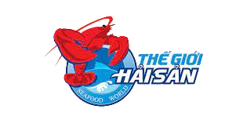
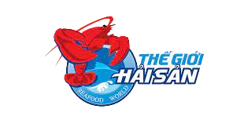

Sản Phẩm Bán Chạy Của Quán

Ốc Hương Sốt Trứng Muối
Ốc hương sốt trứng muối là món ăn vặt được rất nhiều người yêu thích, đặc biệt là các bạn trẻ. Khi đi qua các quán vỉa hè bạn có thể dễ dàng bắt gặp các quán ăn ốc hương rất đông đúc và mùi hương của nó toả ra cũng rất lôi cuốn. xem chi tiết
Cá Mặt Quỷ nướng muối ớt
Cá mặt quỷ là một loại cá được rất nhiều người yêu thích bởi chúng mang đến hương vị thơm ngon khó cưỡng cùng hàm lượng dinh dưỡng dồi dào. xem chi tiết
Mực Nang Nướng Sa Tế
Mực biển là một loại hải sản không những giàu dưỡng chất mà còn có thể được chế biến thành nhiều món ăn hấp dẫn. Trong đó, mực nang nướng sa tế là một món được nhiều người tìm kiếm xem chi tiết
Tôm Alaska Hấp
Tôm Hùm Alaska Fresh là những con Tôm Hùm chất lượng cao, nhập khẩu từ nước ngoài và được đặt trong hồ nước mặn tại nhà hàng Lobster Bay. Tôm hùm Alaska là một trong những món ngon giá trị rất hấp dẫn được nhiều thực khách ưa chuộng. xem chi tiết